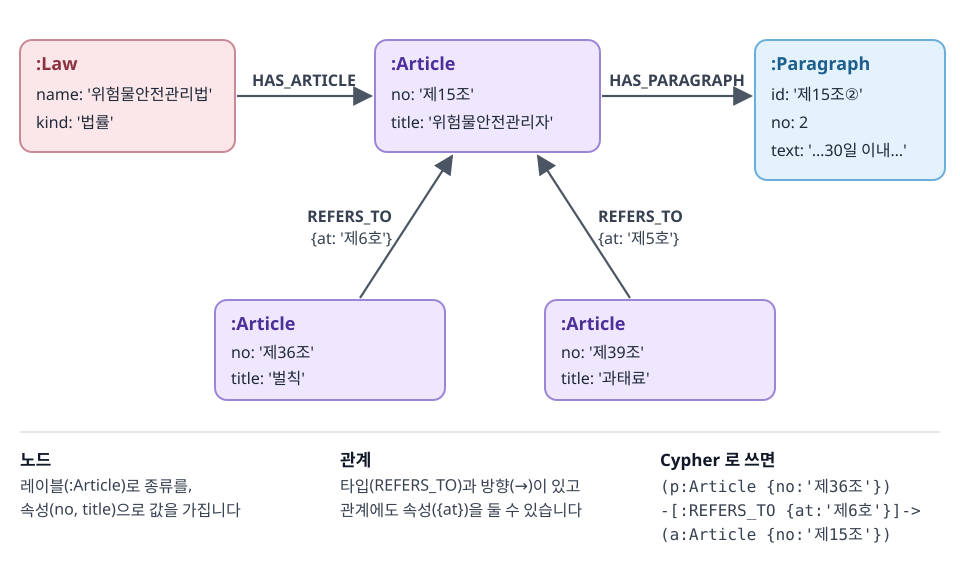
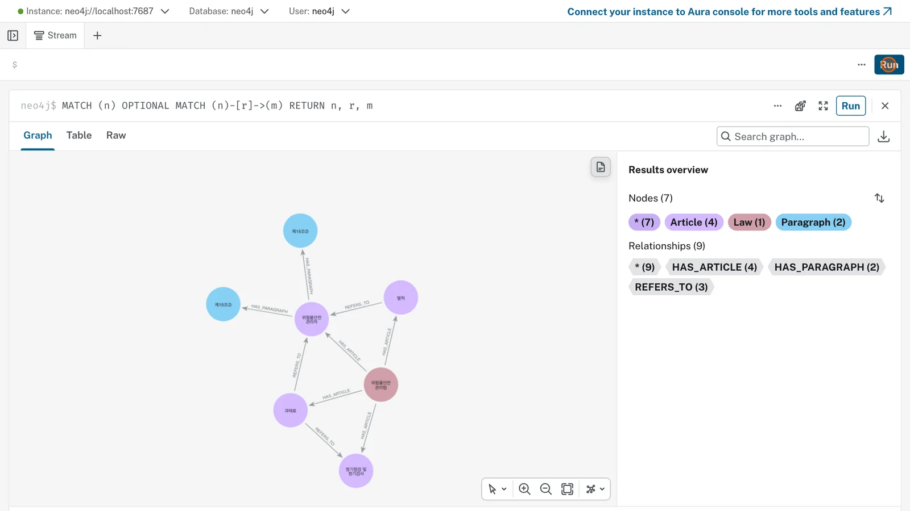
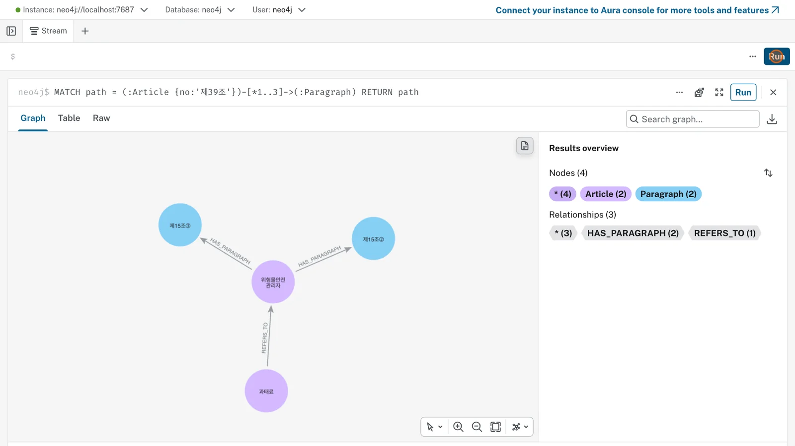
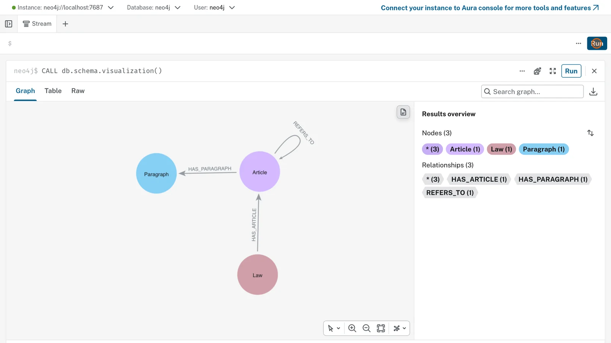
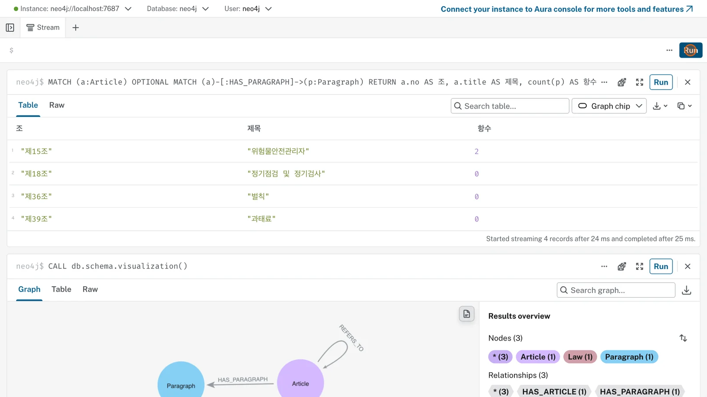

위험물안전관리법의 조와 항으로 노드 일곱 개짜리 작은 그래프를 만들며 Cypher의 CREATE·MERGE·MATCH·WHERE·가변 길이 경로·OPTIONAL MATCH·집계·제약과 색인을 익힙니다. 질의와 출력은 cypher-shell과 Neo4j Browser의 실제 실행 기록에서 옮겼습니다.
무엇을 · 왜#
Cypher는 Neo4j의 질의 언어입니다. 찾으려는 패턴을 (노드)-[관계]->(노드)처럼 그림 그리듯 씁니다. 6장의 적재 코드는 MERGE로 노드와 관계를 넣고, 9장에서 Claude는 MCP로 MATCH 질의를 직접 써서 답을 찾습니다. 그 질의를 읽고 올바른지 판단하려면 기본 문법을 알아야 합니다.
이 장에서는 법령 1 · 조 4 · 항 2 = 노드 7개, 관계 9개로 구성된 맛보기 그래프를 만들고, 질의하고, 지웁니다. 항 본문은 위험물안전관리법 제15조 제2항·제3항 원문입니다. 5장에서 설계할 실제 스키마보다 단순하게 만든 연습용 그래프입니다(예: 조→항 관계 이름은 HAS_PARAGRAPH).
노드 · 관계 · 속성#

| 요소 | 표기 형식 | 이 장의 예 |
|---|---|---|
| 노드 | (변수:레이블 {속성: 값}) |
(a:Article {no:'제15조'}) |
| 관계 | -[변수:타입 {속성: 값}]-> |
-[:REFERS_TO {at:'제6호'}]-> |
| 속성 | 키: 값 (문자열·숫자·목록) |
title: '위험물안전관리자', no: 2 |
변수(a, r)는 해당 문장 안에서만 쓰는 이름입니다. 관계에는 항상 방향이 있습니다.
따라 하기 ① 만들기#
- cypher-shell에 접속합니다. 3장의 컨테이너 안에서 대화형으로 실행합니다. 문장은
;로 끝내야 실행되며,:exit로 종료합니다.docker exec -it graphrag-law-neo4j cypher-shell -u neo4j -p "$NEO4J_PASSWORD"Connected to Neo4j using Bolt protocol version 5.8 at neo4j://localhost:7687 as user neo4j. Type :help for a list of available commands or :exit to exit the shell. Note that Cypher queries must end with a semicolon.처음에는MATCH (n) RETURN count(n) AS 노드수;0이 나오며, DB가 비어 있다는 뜻입니다. - CREATE — 노드 하나를 만듭니다.
CREATE (l:Law {name:'위험물안전관리법', kind:'법률'}) RETURN l;| (:Law {name: "위험물안전관리법", kind: "법률"}) | Added 1 nodes, Set 2 properties, Added 1 labels - MERGE — 있으면 찾고, 없으면 만듭니다. 법령 노드를 찾은 뒤
UNWIND로 목록을 한 행씩 풀어 조 4개와HAS_ARTICLE관계를 만듭니다.MATCH (l:Law {name:'위험물안전관리법'}) UNWIND [['제15조','위험물안전관리자'],['제18조','정기점검 및 정기검사'],['제36조','벌칙'],['제39조','과태료']] AS r MERGE (a:Article {law:l.name, no:r[0]}) SET a.title = r[1] MERGE (l)-[:HAS_ARTICLE]->(a);같은 문장을 한 번 더 실행하면 노드와 관계가 늘지 않고Added 4 nodes, Created 4 relationships, Set 12 properties, Added 4 labelsSet 4 properties(제목 4개를 다시 설정)만 나옵니다.CREATE였다면 조가 8개가 됩니다. 6장의 적재 코드가MERGE를 쓰는 까닭입니다. - 조 → 항. 제15조 아래에 항 두 개를 연결합니다(본문은 원문 그대로).
MATCH (a:Article {no:'제15조'}) MERGE (a)-[:HAS_PARAGRAPH]->(p2:Paragraph {id:'제15조②'}) SET p2.no = 2, p2.text = '제1항의 규정에 따라 안전관리자를 선임한 제조소등의 관계인은 그 안전관리자를 해임하거나 안전관리자가 퇴직한 때에는 해임하거나 퇴직한 날부터 30일 이내에 다시 안전관리자를 선임하여야 한다.' MERGE (a)-[:HAS_PARAGRAPH]->(p3:Paragraph {id:'제15조③'}) SET p3.no = 3, p3.text = '제조소등의 관계인은 제1항 및 제2항에 따라 안전관리자를 선임한 경우에는 선임한 날부터 14일 이내에 행정안전부령으로 정하는 바에 따라 소방본부장 또는 소방서장에게 신고하여야 한다.';Added 2 nodes, Created 2 relationships, Set 6 properties, Added 2 labels - 조 → 조 참조. 벌칙(제36조)·과태료(제39조) 조문이 어느 조를 가리키는지 관계로 나타내고, 몇 번째 호에서 가리키는지는 관계 속성
at에 저장합니다.MATCH (a15:Article {no:'제15조'}), (a18:Article {no:'제18조'}), (p36:Article {no:'제36조'}), (p39:Article {no:'제39조'}) MERGE (p36)-[:REFERS_TO {at:'제6호'}]->(a15) MERGE (p39)-[:REFERS_TO {at:'제5호'}]->(a15) MERGE (p39)-[:REFERS_TO {at:'제7호, 제7호의2'}]->(a18);Created 3 relationships, Set 3 propertiesMATCH (n) RETURN labels(n)[0] AS 레이블, count(*) AS 수;로 세면 Law 1 · Article 4 · Paragraph 2입니다.
따라 하기 ② 묻기#
MATCH — 패턴과 방향#
「제15조를 가리키는 조문은?」이라는 질문을 화살표 방향에 맞춰 질의로 씁니다.
MATCH (pen:Article)-[r:REFERS_TO]->(a:Article {no:'제15조'})
RETURN pen.no AS 조문, pen.title AS 제목, r.at AS 호;
| "제39조" | "과태료" | "제5호" |
| "제36조" | "벌칙" | "제6호" |
2 rows
화살표를 거꾸로 쓰면 MATCH (pen:Article)<-[:REFERS_TO]-(a:Article {no:'제15조'}) RETURN pen.no;는 0 rows입니다. 제15조가 다른 조를 가리키는 관계는 없기 때문입니다. 방향을 구분하지 않으려면 -[:REFERS_TO]-처럼 화살표 머리를 빼고 씁니다.
WHERE — 조건#
MATCH (a:Article)-[:HAS_PARAGRAPH]->(p:Paragraph)
WHERE p.text CONTAINS '30일'
RETURN a.no AS 조, p.no AS 항, left(p.text, 40) AS 본문앞부분;
| "제15조" | 2 | "제1항의 규정에 따라 안전관리자를 선임한 제조소등의 관계인은 그 안전관리" |
1 row
CONTAINS는 문자열이 그대로 포함되어 있는지만 확인합니다. 띄어쓰기나 가운뎃점(ㆍ와 ·)이 다르면 찾지 못합니다. 그래서 5장의 스키마는 가운뎃점을 통일한 정규화 본문과 전문 색인(아래 「제약과 색인」)을 따로 둡니다.
RETURN — 돌려줄 것#
RETURN은 노드 전체(RETURN l), 속성(pen.no), 계산한 값을 반환하고 AS로 열 이름을 붙입니다. MATCH 없이 값만 계산할 수도 있습니다.
RETURN '위험물안전관리법 제15조' AS 조문, size('제조소등') AS 글자수; // 글자수 4
가변 길이 경로 — 몇 걸음 건너서#
*1..3은 「관계 1~3개를 건너서」라는 뜻입니다. 관계 타입을 적지 않으면 어떤 관계든 따라갑니다.
MATCH path = (:Article {no:'제39조'})-[*1..3]->(p:Paragraph)
RETURN length(path) AS 길이, [x IN nodes(path) | coalesce(x.id, x.no)] AS 경로;
| 2 | ["제39조", "제15조", "제15조②"] |
| 2 | ["제39조", "제15조", "제15조③"] |
2 rows
과태료 조문에서 두 걸음 만에 의무 조항의 항에 도달했습니다. 이렇게 여러 조문을 거치는 질문이 1장에서 설명한 멀티홉이며, 9장 골든 퀘스천 5번(벌칙)이 이 유형입니다. [x IN 목록 | 식]은 목록의 원소마다 식을 계산하고, coalesce는 앞에서부터 확인해 처음으로 값이 있는 것을 선택합니다.
OPTIONAL MATCH — 없어도 빠뜨리지 않기#
MATCH (a:Article)
OPTIONAL MATCH (a)-[:HAS_PARAGRAPH]->(p:Paragraph)
RETURN a.no AS 조, a.title AS 제목, count(p) AS 항수 ORDER BY 조;
| "제15조" | "위험물안전관리자" | 2 |
| "제18조" | "정기점검 및 정기검사" | 0 |
| "제36조" | "벌칙" | 0 |
| "제39조" | "과태료" | 0 |
4 rows
두 번째 줄을 MATCH로 바꾸면 MATCH (a:Article)-[:HAS_PARAGRAPH]->(p:Paragraph) RETURN a.no AS 조, count(p) AS 항수;는 "제15조" | 2 한 행만 남습니다. 항이 없는 조가 결과에서 사라집니다.
집계 · ORDER BY · LIMIT#
count는 개수를 세고, collect는 값을 목록으로 모읍니다. 집계하지 않은 열(a.no, a.title)이 그룹을 나누는 기준이 됩니다.
MATCH (pen:Article)-[:REFERS_TO]->(a:Article)
RETURN a.no AS 조문, a.title AS 제목, count(pen) AS 참조수, collect(pen.no) AS 참조하는조문
ORDER BY 참조수 DESC LIMIT 1;
| "제15조" | "위험물안전관리자" | 2 | ["제36조", "제39조"] |
1 row
ORDER BY 참조수 DESC로 많이 참조된 순서로 정렬하고 LIMIT 1로 첫 번째 행만 가져왔습니다.
cypher-shell 표가 삐뚤어져 보일 때
cypher-shell은 한글 한 글자를 한 칸으로 세어 표의 세로줄이 어긋납니다. 값은 맞습니다. 위 출력은 표의 위아래 테두리를 빼고 옮겼습니다. 위 화살표 키는 바로 앞 줄(주석 줄 포함)을 불러오므로, 여러 줄 문장을 다시 실행하려면 여러 번 눌러야 합니다.
따라 하기 ③ 제약과 색인#
제약은 잘못된 데이터가 들어오지 못하게 막고, 그 속성에 색인도 함께 만듭니다. 전문(full-text) 색인은 낱말로 조문을 찾을 수 있게 합니다.
CREATE CONSTRAINT law_name IF NOT EXISTS FOR (l:Law) REQUIRE l.name IS UNIQUE;
CREATE CONSTRAINT article_key IF NOT EXISTS FOR (a:Article) REQUIRE (a.law, a.no) IS UNIQUE;
CREATE FULLTEXT INDEX paragraph_text IF NOT EXISTS FOR (p:Paragraph) ON EACH [p.text]
OPTIONS {indexConfig: {`fulltext.analyzer`: 'cjk'}};
SHOW CONSTRAINTS YIELD name, type, labelsOrTypes, properties;
Added 1 constraints
Added 1 constraints
Added 1 indexes
| "article_key" | "UNIQUENESS" | ["Article"] | ["law", "no"] |
| "law_name" | "UNIQUENESS" | ["Law"] | ["name"] |
두 속성을 묶은 유일 제약((a.law, a.no))도 Community 판에서 사용할 수 있습니다(존재까지 강제하는 NODE KEY는 Enterprise 판 기능). 같은 이름의 법령을 다시 만들려고 하면 제약이 이를 막습니다.
CREATE (:Law {name:'위험물안전관리법'});
Node(0) already exists with label `Law` and property `name` = '위험물안전관리법'
전문 색인으로 찾아봅니다. 점수(score)가 높을수록 질의에 사용한 낱말과 더 잘 일치합니다.
CALL db.index.fulltext.queryNodes('paragraph_text', '안전관리자 선임 신고') YIELD node, score
RETURN node.id AS 항, round(score, 3) AS 점수;
| "제15조③" | 0.805 |
| "제15조②" | 0.676 |
한국어 본문에는 cjk 분석기를 씁니다. 기본 분석기는 띄어쓰기 단위로 낱말을 자르므로 「선임하여야」를 「선임」과 다른 낱말로 봅니다. 사전에 실행해 본 결과 기본 분석기로는 '선임'이 이 항을 찾지 못했고(0건) '선임*'처럼 별표를 붙여야 찾았습니다. cjk는 두 글자씩 잘라 색인해 '선임'(0.13), '관리자'(0.36), '안전관리자 선임'(0.85)을 모두 찾았습니다. 5장의 스키마도 전문 색인을 모두 cjk로 만듭니다.
SHOW INDEXES YIELD name, type, labelsOrTypes, properties WHERE type <> 'LOOKUP';로 확인하면 제약이 만든 article_key·law_name(RANGE)과 paragraph_text(FULLTEXT) 세 개가 나옵니다.
지우기#
6장에서 실제 데이터를 넣기 전에 맛보기 그래프와 제약·색인을 모두 지웁니다. DETACH DELETE는 노드에 붙은 관계까지 함께 지웁니다(관계가 남은 노드는 DELETE만으로 지울 수 없습니다).
MATCH (n) DETACH DELETE n;
DROP CONSTRAINT law_name; DROP CONSTRAINT article_key; DROP INDEX paragraph_text;
MATCH (n) RETURN count(n) AS 노드수;
Deleted 7 nodes, Deleted 9 relationships
Removed 1 constraints
Removed 1 constraints
Removed 1 indexes
| 0 |
확인 — Neo4j Browser로 보기#
지우기 전에 같은 데이터를 Neo4j Browser(http://localhost:7474)에서 보면 표 대신 그림으로 나옵니다. Browser에서는 문장 끝 ;를 생략해도 됩니다.
MATCH (n) OPTIONAL MATCH (n)-[r]->(m)
RETURN n, r, m

오른쪽 Results overview에 레이블·관계 타입별 개수가 나옵니다. 노드를 누르면 속성이 보입니다.
MATCH path = (:Article {no:'제39조'})-[*1..3]->(:Paragraph)
RETURN path

CALL db.schema.visualization()은 실제로 들어 있는 레이블과 관계 타입을 모아 스키마 그림으로 보여 줍니다. 6장에서도 이 명령으로 적재 결과를 확인합니다.


한 장 요약표#
| 문법 | 뜻 | 이 장의 예 |
|---|---|---|
CREATE |
무조건 새로 만듭니다 | CREATE (l:Law {…}) |
MERGE |
있으면 찾고 없으면 만듭니다. 다시 실행해도 중복되지 않습니다 | MERGE (a:Article {…}) |
SET |
속성을 설정합니다(덮어쓰기) | SET a.title = r[1] |
UNWIND |
목록을 한 행씩 풉니다 | UNWIND [[…],[…]] AS r |
MATCH |
패턴을 찾습니다. 화살표 방향이 맞아야 합니다 | (pen)-[:REFERS_TO]->(a) |
WHERE |
조건으로 거릅니다 | p.text CONTAINS '30일' |
RETURN … AS |
돌려줄 값과 열 이름 | RETURN pen.no AS 조문 |
-[*1..3]-> |
관계 1~3개를 건너는 가변 길이 경로 | (a)-[*1..3]->(p) |
OPTIONAL MATCH |
없으면 null로 두고 행을 남깁니다 | 항이 없는 조도 항수 0 |
count · collect |
개수 · 목록으로 모으기(집계) | count(pen), collect(pen.no) |
ORDER BY · LIMIT |
정렬(DESC는 큰 것부터) · 앞에서 몇 행만 |
ORDER BY 참조수 DESC |
CONSTRAINT … UNIQUE |
유일 제약입니다. 해당 속성의 색인도 생성됩니다 | REQUIRE l.name IS UNIQUE |
FULLTEXT INDEX |
전문 색인. 한국어는 cjk 분석기 |
fulltext.queryNodes(…) |
DETACH DELETE · DROP |
노드와 관계 지우기 · 제약·색인 지우기 | MATCH (n) DETACH DELETE n |
막히면
전문 색인을 만들었는데 「없는 색인」이라고 나옵니다
- 증상:
CREATE FULLTEXT INDEX zz_cjk IF NOT EXISTS FOR (n:ZzT) ON EACH [n.text] OPTIONS {indexConfig: {`fulltext.analyzer`: 'cjk'}}가 오류 없이 끝났는데, 조회하면There is no such fulltext schema index: zz_cjk가 나옵니다. - 원인: 같은 레이블·속성(
ZzT.text)에 이름이 다른 전문 색인(zz_std)이 이미 있으면IF NOT EXISTS가 「이미 있음」으로 보고 별도 메시지 없이 건너뜁니다. 분석기를 바꿔 다시 만들 때 발생합니다. - 조치:
DROP INDEX zz_std IF EXISTS;로 먼저 지우고 다시 만듭니다.SHOW INDEXES YIELD name, type, labelsOrTypes, properties;로 확인합니다.
전문 색인이 「선임」으로 「선임하여야」를 찾지 못합니다
- 증상: 기본 분석기로 만든 전문 색인에서
CALL db.index.fulltext.queryNodes(…, '선임')이 「…선임하여야 한다」 항을 찾지 못합니다(0건).'선임*'로만 찾을 수 있습니다. - 원인: 기본 분석기(
standard-no-stop-words)는 띄어쓰기 단위로 낱말을 잘라, 조사·어미가 붙은 낱말을 다른 낱말로 봅니다. - 조치: 한국어 본문 색인은
OPTIONS {indexConfig: {`fulltext.analyzer`: 'cjk'}}로 만듭니다. 사용할 수 있는 분석기는CALL db.index.fulltext.listAvailableAnalyzers()로 확인합니다.
확인 문제#
3단계의 MERGE 문장을 두 번 실행하면 조 노드는 몇 개가 되나요?
4개 그대로입니다. 두 번째 실행은 {law, no}가 같은 노드를 찾아 사용하므로 Set 4 properties(제목 다시 쓰기)만 나오고 노드·관계는 늘지 않습니다. CREATE였다면 8개가 됩니다.
MATCH (pen:Article)<-[:REFERS_TO]-(a:Article {no:'제15조'})는 왜 0행인가요?
이 패턴은 「제15조가 가리키는 조문」을 묻습니다. 맛보기 그래프의 REFERS_TO는 모두 벌칙·과태료 조문(제36조·제39조)에서 제15조·제18조 쪽으로 향하며, 제15조에서 나가는 REFERS_TO는 없습니다. 관계 방향이 질문의 방향과 같아야 합니다.
조마다 항 개수를 셀 때 OPTIONAL MATCH를 써야 하는 까닭은 무엇인가요?
MATCH (a)-[:HAS_PARAGRAPH]->(p)만 쓰면 패턴 전체가 일치하는 행만 남기므로 항이 없는 조(제18조·제36조·제39조)가 결과에서 빠집니다. OPTIONAL MATCH는 일치하는 항이 없으면 p를 null로 두고 조의 행을 남기므로 count(p)가 0으로 나옵니다.
한국어 조문에 전문 색인을 만들 때 cjk 분석기를 고르는 이유는 무엇인가요?
기본 분석기는 띄어쓰기로 낱말을 자르므로 「선임하여야」 안의 「선임」을 찾지 못합니다. cjk는 글자를 두 개씩 잘라 색인해 조사·어미가 붙어 있어도 「선임」, 「관리자」 같은 낱말로 찾을 수 있습니다.